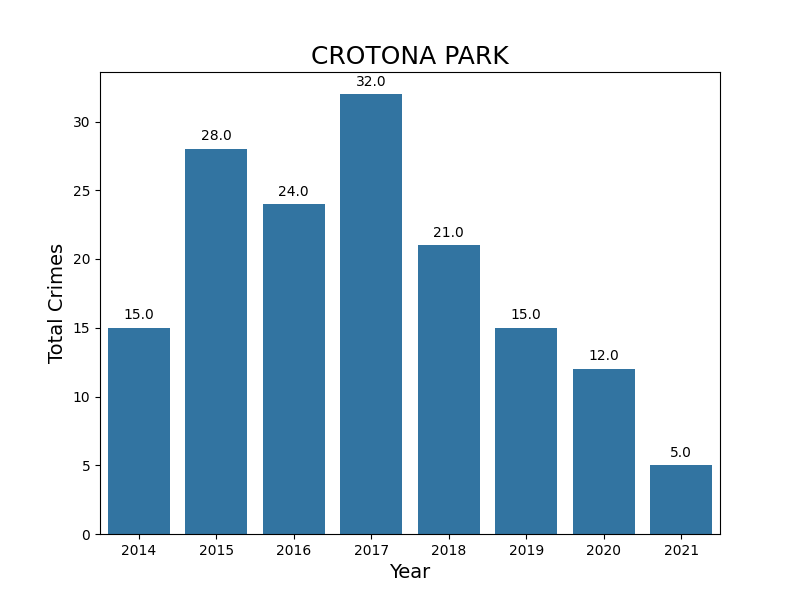
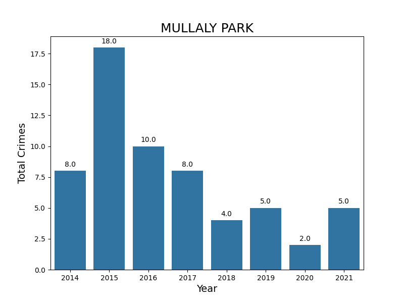
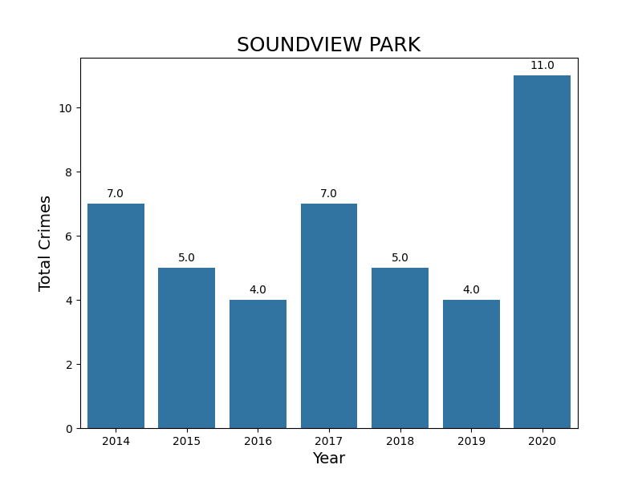
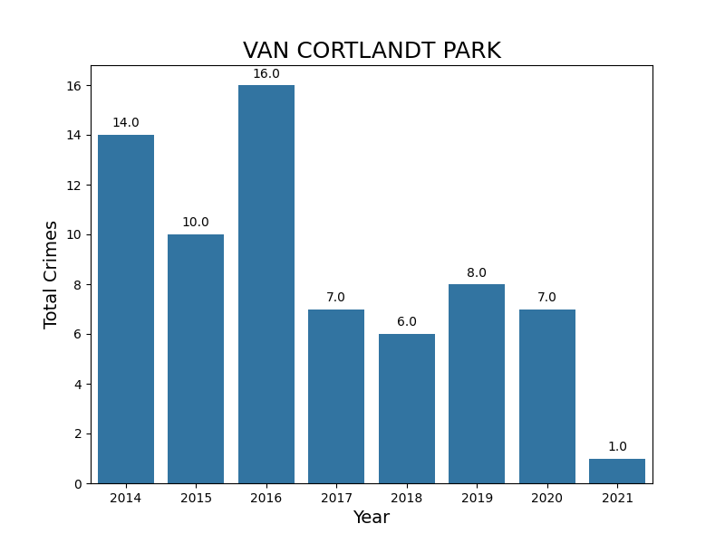
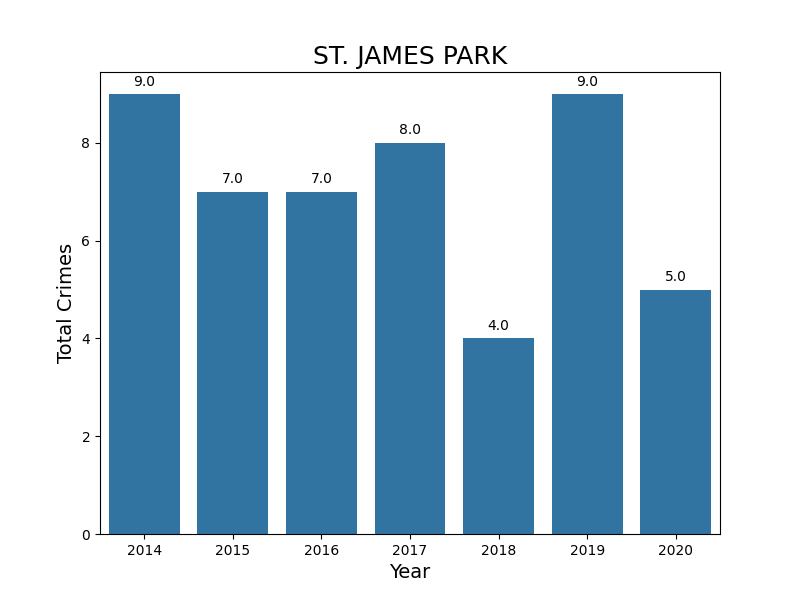

The following bar plots showcase the total number of crimes over the period 2014-2021 for several Bronx parks. Starting with NYC Parks Crime Statistics, the data was cleaned up using Pandas. Due to the amount of parks, I'm focusing in the first five Bronx parks with highest index of crimes for the year 2014, which are then used for the subsequent years.
    